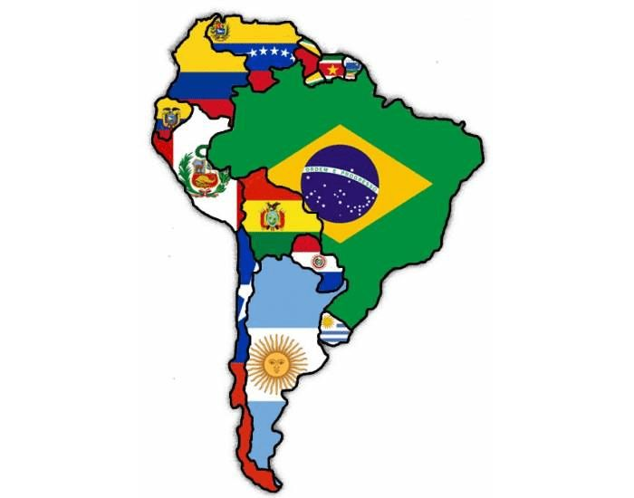
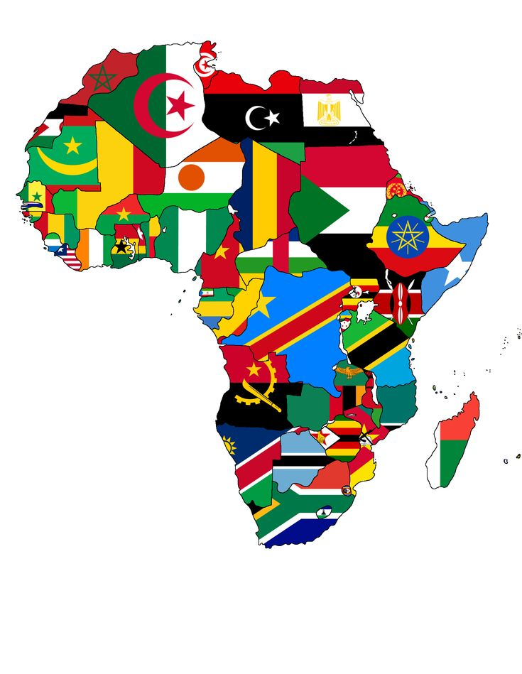
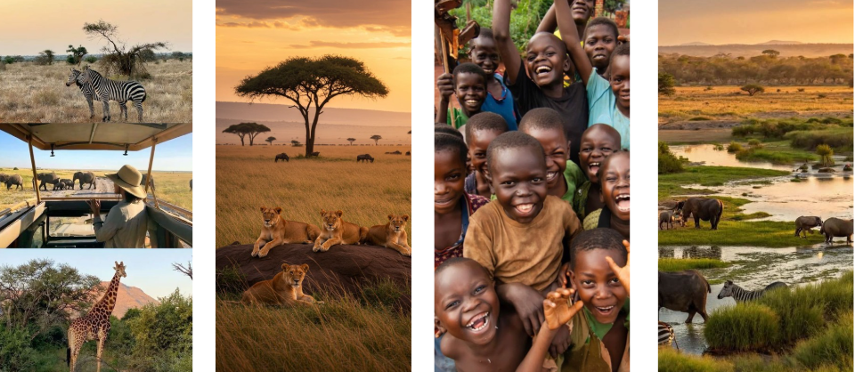
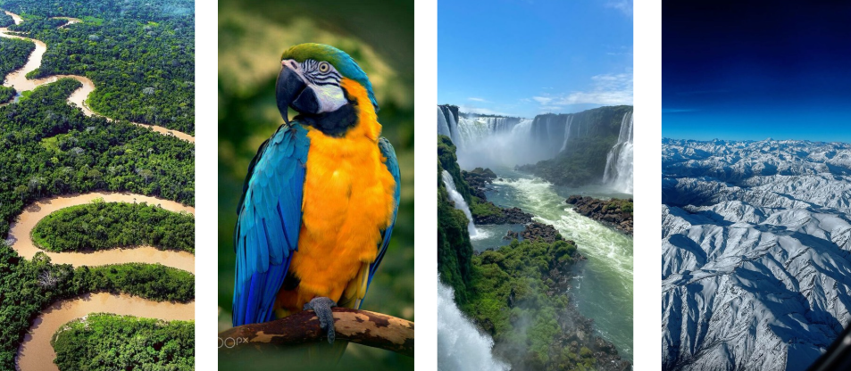

COMPARAÇÃO AMÉRICA DO SUL E ÁFRICA


A América do Sul e a África são continentes ricos em diversidade cultural, histórica e natural. Enquanto a África se destaca por sua vasta extensão territorial e riqueza étnica, a América do Sul impressiona por suas paisagens únicas e forte identidade cultural. Enquanto a África se destaca pelo deserto de Saara e o Rio Nilo, América do sul se destaca pela Floresta Amazônica e a Cordilheira dos Andes. Atualmente, os dois continentes enfrentam desafios semelhantes, como desigualdade social e desenvolvimento econômico, mas também apresentam grande potencial de crescimento, inovação e integração regional.
ÁFRICA

A África é o segundo maior continente do mundo, com mais de 1,4 bilhão de habitantes e 54 países. Considerada o berço da humanidade, destaca-se por sua enorme diversidade cultural, étnica e linguística, além de paisagens marcantes como o Deserto do Saara e o Rio Nilo. Ao mesmo tempo, o continente enfrenta fortes desigualdades sociais e econômicas. Em muitos países, há desafios relacionados à pobreza, acesso limitado à educação e à saúde, além de diferenças significativas no desenvolvimento entre regiões urbanas e rurais. Essas desigualdades têm raízes históricas no período colonial e em conflitos internos, mas a África também apresenta crescimento econômico e grande potencial de desenvolvimento em diversas áreas.
AMÉRICA DO SUL

A América do Sul é o quarto maior continente do mundo, com cerca de 430 milhões de habitantes em 12 países, dentre esses, Brasil, Argentina, Colômbia, Chile, e entre outros. Conhecida por sua diversidade cultural, resultado da mistura de povos indígenas, europeus e africanos, o continente se destaca por paisagens impressionantes, como a Floresta Amazônica e a Cordilheira dos Andes.Apesar de seu potencial econômico e riquezas naturais, a região enfrenta desigualdades sociais significativas, com diferenças no acesso à educação, saúde e oportunidades entre áreas urbanas e rurais. A América do Sul combina história, diversidade e desafios, sendo um continente de grande riqueza cultural e natural.